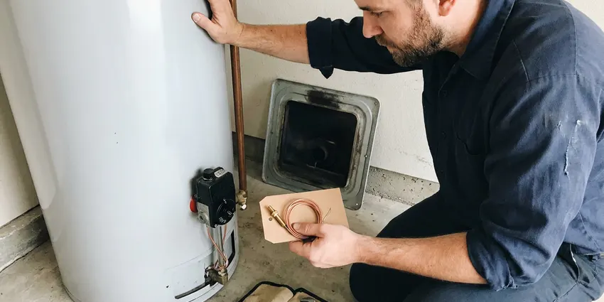
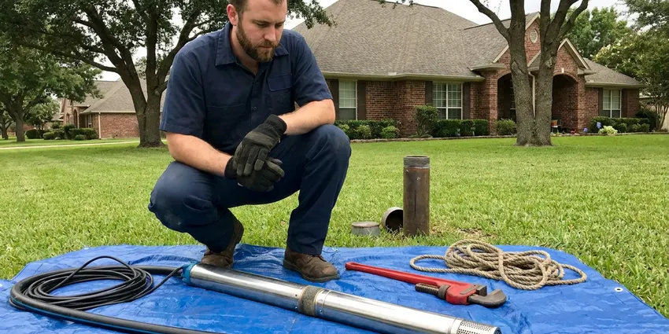
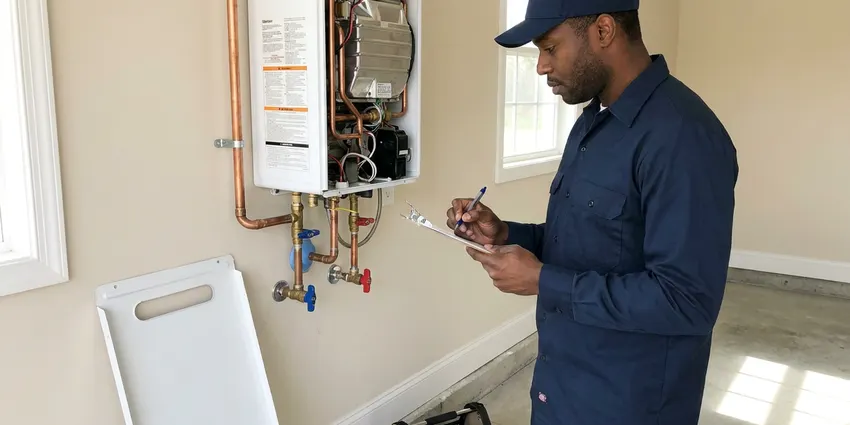

Septic Tank Repair in Round Rock, TX
When your septic system acts up in Round Rock, TX, DFJ Plumbing provides the expert repair you need. Our team diagnoses and fixes problems right.
- Fast Septic Tank Service
- Licensed Texas Plumbers
- Upfront Pricing
- Guaranteed Workmanship
Need Septic Tank Repair Now in Round Rock, TX?
Don't let a septic issue disrupt your home, contact DFJ Plumbing for prompt and professional service.
Your Go-To for Septic Tank Repair in Round Rock, TX
DFJ Plumbing is the premier choice for septic tank repair in Round Rock, TX. We understand the unique challenges Texas properties face with their septic systems, from soil conditions to heavy usage.
Our expertise includes:
- Clog removal and line jetting for septic systems.
- Drain field repair and replacement expertise.
- Septic pump and alarm system diagnostics.

Additional Plumbing Repair Services in Round Rock, TX
We offer expert plumbing repair services across Round Rock, TX to stop leaks, clear blockages, and keep every fixture working the way it should.


Professional water heater repair, Round Rock

Well Pump Repair in Round Rock


Tankless Water Heater Repair near Round Rock

Customers
Why Choose DFJ Plumbing for Septic Tank Repair in Round Rock, TX?
We don't just fix symptoms, we identify the root cause of your septic tank problems. Our solutions are designed for durability, considering the specific demands of Texas homes.
- Local Expertise, Our team understands the local soil conditions and regulations specific to septic systems in Round Rock, ensuring compliant and effective repairs.
- Advanced Tools, We utilize modern diagnostic equipment, like sewer cameras and hydro-jetting, to accurately pinpoint and clear septic line blockages without extensive excavation.
- Transparent Pricing, You will receive a clear, upfront estimate before any work begins, so there are no surprises when it comes to your septic tank repair costs.
Citywide Coverage
No matter where you are located within Round Rock, our expert team is available to provide prompt and professional septic tank repair services. We cover the entire area to ensure no homeowner is left with a failing system.
Experienced Team
Our team of licensed plumbers brings years of specialized experience in septic tank repair to every job. They are continuously trained on the latest techniques and codes to deliver superior service.
Safety-First Approach
Safety is paramount in all our septic tank repair operations, both for our team and your property. We strictly adhere to all local and state plumbing codes, including those for excavations and waste handling.
Trusted Certified Round Rock Plumbing Services Professionals
At DFJ Plumbing, we take pride in providing licensed, certified plumbing services throughout Round Rock, TX. Backed by leading industry credentials, our experienced plumbers combine technical skill with genuine customer care. Whether it is repair, installation, or maintenance, we follow strict safety and quality standards to deliver long-lasting results you can trust.
Call Us Now PHCC Plumbing Contractor Recognition
PHCC Plumbing Contractor Recognition Better Business Bureau (BBB) Accreditation
Better Business Bureau (BBB) Accreditation Angi Certified Pro
Angi Certified Pro ISO 9001 Quality Management Certification
ISO 9001 Quality Management CertificationReliable Septic Tank Repair Services in Round Rock, TX
Septic Tank Clog Removal in Round Rock
Stubborn clogs in your septic tank or main line can quickly lead to backups and foul odors. Our technicians use advanced hydro-jetting equipment to clear even the toughest blockages, restoring proper flow. We identify the cause, whether it's grease buildup, non-flushable items, or root intrusion, and provide solutions to prevent future issues. This service is crucial for maintaining a healthy septic system in Round Rock homes.

Drain Field Repair and Restoration in Round Rock, TX
A failing drain field can cause standing water, lush green patches, and sewage odors in your yard. DFJ Plumbing specializes in diagnosing drain field problems, which often stem from compaction, hydraulic overload, or biomat buildup. We offer comprehensive repair solutions, including aeration, soil rejuvenation, and partial or full drain field replacement, tailored to the specific soil conditions in Round Rock, TX.
Septic Pump and Alarm System Repair in Round Rock
Many modern septic systems, especially those on sloped properties or with advanced treatment units, rely on a working septic pump and alarm. When your pump fails or the alarm sounds, it indicates a critical issue. Our team can repair or replace faulty pumps, floats, and electrical components, ensuring your system effectively moves wastewater to the drain field. We service all major pump brands for homes in Round Rock.
Baffle Repair and Replacement in Round Rock, TX
The inlet and outlet baffles inside your septic tank are vital for separating solids from liquids and preventing them from entering the drain field. Over time, these baffles can deteriorate, leading to system failure. DFJ Plumbing provides expert repair and replacement of damaged septic tank baffles, using durable materials that withstand the harsh conditions within the tank, protecting your entire septic system in Round Rock, TX.
Emergency Septic Tank Repair in Round Rock
Septic emergencies, like severe backups or overflowing tanks, require immediate attention. DFJ Plumbing offers emergency septic tank repair services in Round Rock to address urgent issues promptly. We understand that these problems can arise at any time, and our rapid response team is equipped to diagnose and resolve critical failures, minimizing damage and restoring your home's sanitation as quickly as possible.
Commercial Septic System Repair in Round Rock, TX
Commercial properties often have larger, more complex septic systems that demand specialized repair knowledge. DFJ Plumbing provides comprehensive septic tank repair for businesses throughout Round Rock, TX, understanding the unique challenges of high-volume usage and diverse waste streams. We ensure your commercial septic system operates efficiently, preventing costly downtime and maintaining compliance with health regulations.
Preventative Septic Maintenance & Repair in Round Rock
Many septic tank issues can be prevented with regular maintenance. DFJ Plumbing offers routine inspections and preventative repairs to catch small problems before they escalate into costly emergencies. This includes checking sludge levels, inspecting pipes for leaks or damage, and advising on proper septic system care tailored to the climate and usage patterns common in Round Rock.

Septic System Code Compliance in Round Rock, TX
Septic tank repairs often require adherence to specific local and state plumbing codes to ensure public health and environmental protection. DFJ Plumbing ensures all our septic repair work in Round Rock, TX meets or exceeds these strict regulations. We handle any necessary permits and inspections, guaranteeing that your repaired system is fully compliant and operates safely for years to come.
Septic Tank Repair Near Me in Round Rock, TX
When you search for 'septic tank repair near me' in Round Rock, TX, DFJ Plumbing is your trusted local expert. Our proximity allows us to respond quickly to your septic emergencies and routine service calls.
We are deeply familiar with the homes and properties in and around Round Rock, understanding the specific challenges septic systems face here. This local knowledge ensures we provide the most effective and efficient septic tank repair solutions.
DFJ Plumbing at a Glance
- Licensed and insured plumbers serving Round Rock, TX
- 24/7 emergency service with same-day scheduling
- Clear written estimates, no hidden fees
- 4.9-star rated by 812+ Texas customers
Round Rock Map
Round Rock Information
- Population
- 130,406
- Area codes
- 512/737/254
- Service area
- Round Rock and communities within 40 miles
- Nearby
- Pflugerville, Cedar Park, Georgetown, Leander
Effective septic tank repair is crucial for homes in Round Rock, TX, especially given the varied Texas soil conditions and potential for extreme weather impacting system efficiency.
Expert Services
Trust our professionals for reliable DFJ Plumbing solutions in Round Rock, TX.
Our Specialized Plumbing Services in Round Rock, TX
At DFJ Plumbing, we provide a complete range of plumbing services across Round Rock, TX. From leak detection to full system installations, our team ensures fast, precise, and affordable service for both residential and commercial properties. Explore our core services below:


How Our Septic Tank Repair Process Works in Round Rock, TX
Our septic tank repair process is designed for efficiency and transparency, ensuring your system is back in working order with minimal disruption.
Request a Quote
Contact us at (737) 405-5978 to schedule your septic tank repair service. Our friendly team will gather initial information about your issue and set up an appointment.
Diagnosis & Estimate
A certified DFJ Plumbing technician will arrive to thoroughly inspect your septic system, diagnose the problem, and provide a detailed, upfront repair estimate.
Expert Repair
Upon your approval, our plumber will execute the septic tank repair using specialized tools and techniques, ensuring a durable and code-compliant solution.
Frequently Asked Questions About Septic Tank Repair in Round Rock
Septic tank repair costs in Round Rock, TX vary widely depending on the issue. Minor repairs like clearing a clog might range from $300-$700, while major repairs such as drain field replacement can cost $5,000-$15,000 or more. We provide a detailed estimate after diagnosing the problem.
Common signs include sewage odors around the tank or drain field, slow drains or backed-up toilets, lush green patches of grass over the drain field, gurgling sounds from pipes, and standing water in your yard. If you notice any of these, call DFJ Plumbing promptly.
DFJ Plumbing repairs and services a wide range of septic system components from leading brands. This includes pumps from Zoeller, Myers, and Liberty, as well as various types of septic tanks, distribution boxes, and alarm systems. We are experienced with both conventional and aerobic systems.
Many significant septic tank repairs, especially those involving excavation or modifications to the system, do require permits from local health departments or environmental agencies in Round Rock, TX. DFJ Plumbing will help you navigate the permitting process and ensure all work is compliant.
In Texas, common causes of septic tank failure include improper waste disposal (flushing non-biodegradable items), lack of regular pumping, tree root intrusion, heavy vehicle traffic over the drain field, and poor soil drainage. Our arid climate can also impact soil health and drain field performance.
The duration of a septic tank repair depends on the complexity of the issue. Simple clog removals might take a few hours, while more extensive repairs like drain field work could span several days. We will provide an estimated timeline during our initial assessment.
To prevent future septic tank problems, limit water usage, avoid flushing non-biodegradable items, use septic-safe cleaning products, don't pour grease down drains, and schedule regular septic tank pumping every 3-5 years. Regular inspections can also catch issues early.
Texas has diverse soil types, including expansive clays and rocky soils, which can significantly impact septic system performance. Clay soils, common in many areas, have poor drainage, making drain fields more susceptible to failure. Our plumbers understand these local soil challenges.
What People Are Saying About Our Plumbing Experts?

Emily R.
I called DFJ Plumbing for plumbing repair, and the technician was fast, polite, and thorough. They explained the problem clearly and fixed it the same day. I will definitely hire them again. Highly recommended!
Plumbing Repair · Cedar Park, TX
Robert G.
The trenchless sewer replacement saved our front yard. They walked us through the camera inspection footage first so we knew exactly what we were paying for.
Sewer Line Replacement · Pflugerville, TX
Daniel K.
A pipe burst at 11 pm and they actually answered. The plumber showed up within the hour, shut everything down, and had us back to normal the next morning. Could not ask for more.
Emergency Plumbing · Cedar Park, TX
Sofia M.
Two new toilets installed in one visit, no mess left behind, and the tech even adjusted a faucet he noticed was dripping. Fair pricing and really friendly.
Toilet Installation · Round Rock, TXLaura S.
I scheduled a water heater replacement, and the team made the process smooth and affordable. The new unit works perfectly, and they cleaned up after completing the job.
Water Heater Replacement · Leander, TX
Mark T.
When our office needed drain cleaning, DFJ Plumbing provided quick, reliable service. The plumber arrived on time and made sure every drain flowed perfectly before leaving. Very satisfied.
Drain Cleaning · Georgetown, TX